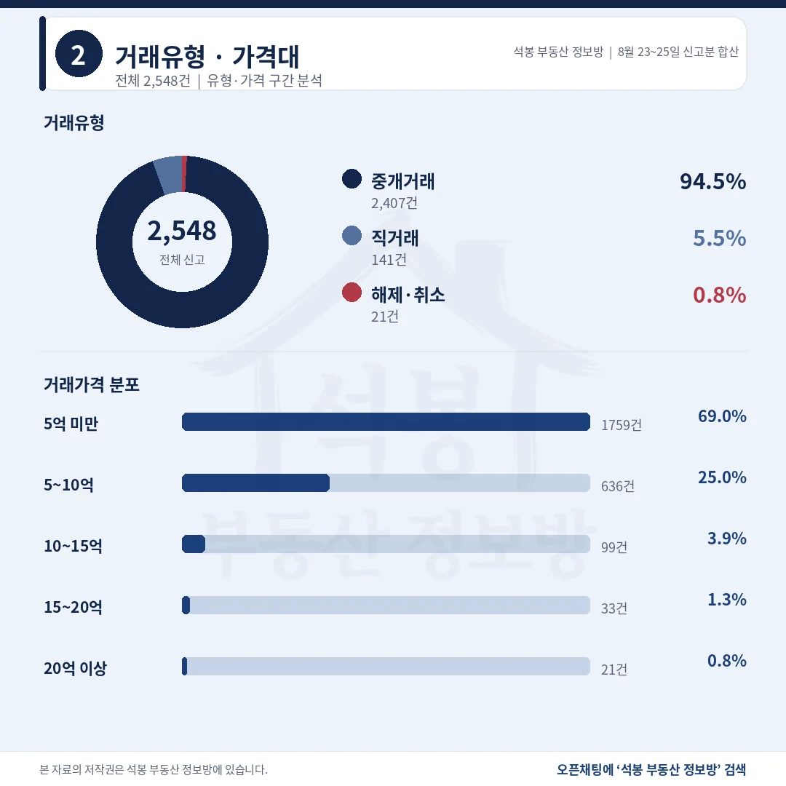
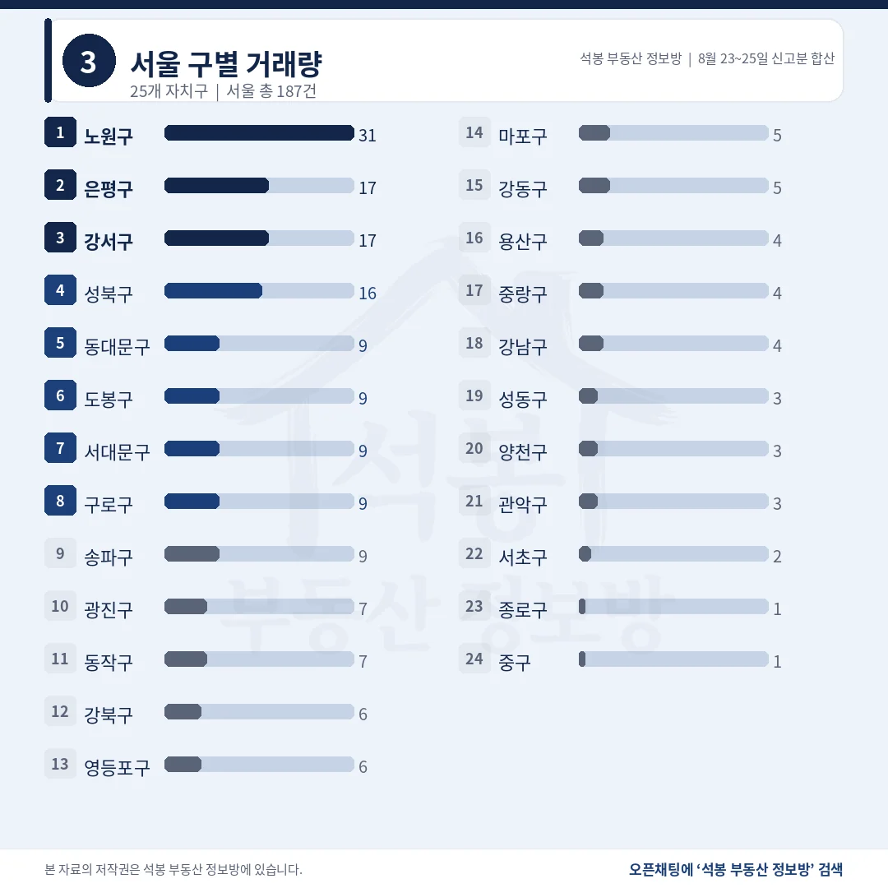
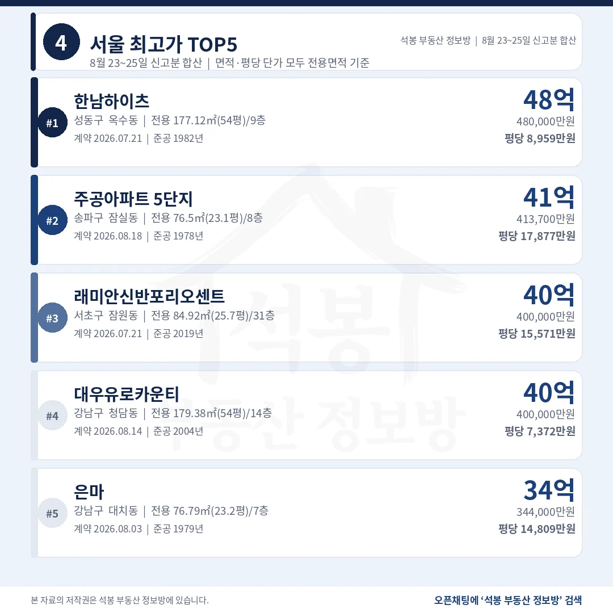
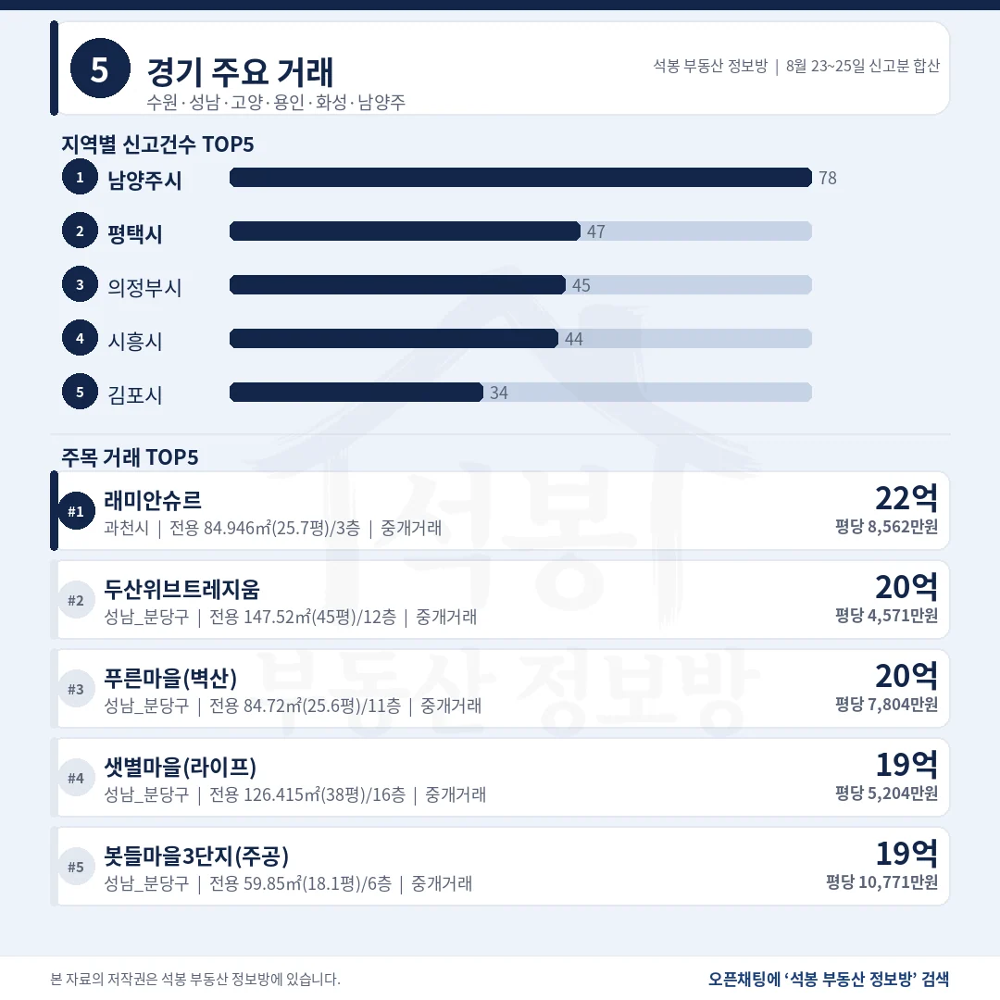
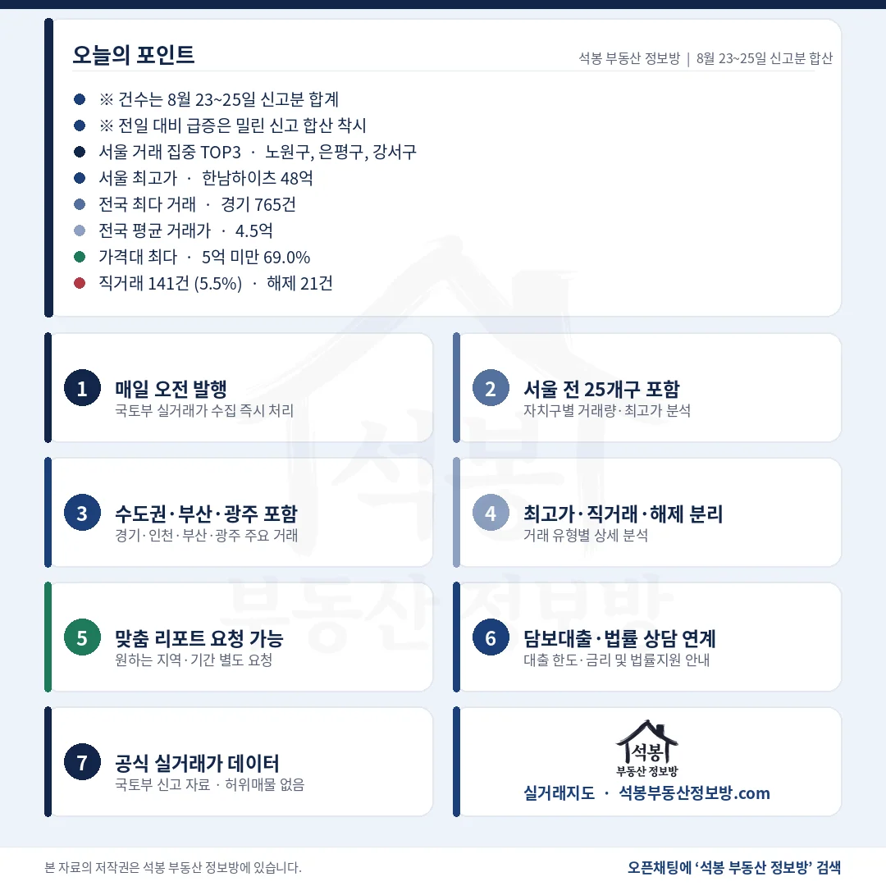

이번 자료는 8월 23일부터 25일까지 사흘 신고분을 합친 2,548건입니다. 주말에 국토부 원본이 갱신되지 않아 밀린 몫이 한꺼번에 들어왔고, 신고일 항목이 없어 날짜별로 가를 수가 없습니다. 그래서 건수는 앞날과 견주지 마시고 비중과 중위값, 상단 거래 위주로 보시는 편이 정확합니다. 사흘을 합쳐도 서울은 187건에 그쳤습니다.
단지명을 누르면 그 단지의 실거래 내역과 시세를 바로 볼 수 있습니다. (면적과 평당 단가는 모두 전용면적 기준)
2,548건 가운데 1,759건이 5억 아래, 해제는 21건

거래유형·가격대
사흘을 합쳐도 10건 중 7건 가까이가 5억을 넘지 못했습니다.
거래유형
건수
비중
중개거래
2,407건
94.5%
직거래
141건
5.5%
해제·취소
21건
0.8%
직거래 141건 중 16건이 충남 아산 배방읍 한 단지에서 법인 매도로 나왔습니다. 이를 빼면 125건, 4.9%입니다.
가격대
건수
비중
5억 미만
1,759건
69.0%
5~10억
636건
25.0%
10~15억
99건
3.9%
15~20억
33건
1.3%
20억 이상
21건
0.8%
전국 평균 4.46억, 중위 3.62억. 10억을 넘긴 거래는 153건으로 전체의 6.0%였습니다.
여기서부터는 회원에게 보여드립니다
카카오 로그인 3초면 전문을 읽을 수 있습니다. 무료입니다.
가입하시면 지역 시장조사 보고서(약식)를 2회 무료로 요청하실 수 있습니다.
이미 회원이면 같은 버튼으로 로그인만 됩니다
서울 187건으로 7.3%, 경남 209건이 그 위입니다

서울 구별 거래량
수도권은 1,120건 44.0%. 서울은 시도 순위에서 네 번째로 내려갔습니다.
시도
신고
비중
중위 거래가
최고가
경기
765건
30.0%
4.76억
22.0억
경남
209건
8.2%
2.20억
10.45억
부산
199건
7.8%
3.99억
18.4억
서울
187건
7.3%
8.49억
48.0억
인천
168건
6.6%
4.06억
10.5억
경기 765건은 남양주 78건, 평택 47건, 의정부 45건, 시흥 44건 순이었습니다.
서울 자치구
신고
중위 거래가
비고
노원구
31건
6.47억
최다 단지 2건 쏠림 없음
은평구
17건
8.75억
녹번역 신축 3건
강서구
17건
8.05억
가양2단지 3건
성북구
16건
8.65억
최다 단지 2건
송파구
9건
22.00억
건수는 9위인데 20억 위가 6건
서울 자치구에는 한 단지가 순위를 만든 곳이 없었습니다. 최다 단지가 3건을 넘지 않습니다.
서울 최고가 한남하이츠 48억, 상위 5건 중 3건이 1970~80년대 준공

서울 최고가 TOP5
총액 1위와 평당 1위가 갈렸고, 평당 1위는 48년 된 5층 단지입니다.
단지
위치
거래가
전용면적
평당(전용)
1 한남하이츠
성동 옥수동
48.0억
177.1㎡ (53.6평)
8,959만 1982년
2 주공아파트 5단지
송파 잠실동
41.37억
76.5㎡ (23.1평)
17,877만 1978년
3 래미안신반포 리오센트
서초 잠원동
40.0억
84.9㎡ (25.7평)
15,571만 2019년
4 대우유로 카운티
강남 청담동
40.0억
179.4㎡ (54.3평)
7,372만 2004년
5 은마
강남 대치동
34.4억
76.8㎡ (23.2평)
14,809만 1979년
1위와 2위의 총액 차이는 6.63억인데, 평당으로 뒤집으면 2위가 1위의 두 배에 가깝습니다. 면적이 2.3배 차이 나서 생긴 일입니다.
비수도권 상단 5건이 모두 부산, 그 꼭대기가 18.4억

경기/인천/부산/광주
서울 밖에서 15억을 넘긴 곳은 경기 15건, 부산 2건뿐이었습니다.
지역
신고
최고가 단지
거래가
평당(전용)
경기
765건
과천 원문동 래미안슈르
22.0억
8,562만
부산
199건
수영 남천동 삼익비치
18.4억
4,634만
광주
125건
광산 쌍암동 힐스테이트첨단
11.0억
2,695만
인천
168건
서해 청라동 청라더샵레이크파크
10.5억
3,247만
경남
209건
창원 성산 용호동 용지아이파크
10.45억
4,077만
부산 상단은 삼익비치 전용 131.3㎡(39.7평) 18.4억입니다. 1979년 준공에 3,060세대라 정비사업 기대가 값에 실려 있습니다. 경기 1위 래미안슈르는 전용 84.9㎡(25.7평)에 22.0억, 평당 8,562만원으로 서울 상위권 값입니다.
20억 넘은 21건, 송파 6건이 강남·서초 합계보다 많습니다

구간
서울
경기
그 밖
20억 이상 21건
18건
3건
0건
15억 이상 54건
37건
15건
부산 2건
서울 18건의 자치구 내역은 송파 6, 용산 3, 강남 2, 서초 2, 강동 2, 성동·광진·동작 각 1건입니다.
고가 구간의 지도가 조금 달라졌습니다. 20억을 넘긴 21건 가운데 서울이 18건인데, 그 안에서 송파구가 6건으로 가장 많았습니다. 강남구와 서초구를 합친 4건보다 많은 숫자입니다. 서울 전체로 보면 송파구 신고는 9건뿐이라 거래량 9위인데, 그 9건 중 3분의 2가 20억 위였고 중위 거래가도 22.00억이었습니다. 잠실 재건축 단지에 거래가 몰린 결과로 보입니다.
다른 한쪽에서는 사흘을 합친 2,548건 중 1,759건이 5억 아래였습니다. 같은 자료 안에 41억짜리 23평과 3억대 거래가 함께 들어 있는 셈입니다. 전국 중위가 3.62억인데 서울 중위는 8.49억, 두 배가 넘습니다. 전국 평균 4.46억이라는 숫자 하나로 시장을 읽으면 어느 쪽도 설명하지 못합니다.
표 보는 법 · 직거래는 중개사를 끼지 않고 당사자끼리 한 거래입니다. 면적과 평당 단가는 모두 전용면적 기준이고, 평은 ㎡를 3.3058로 나눈 값입니다. 중위 거래가는 그 지역 거래를 금액순으로 줄 세웠을 때 한가운데 값이라 평균보다 체감에 가깝습니다. 중위·평균은 해제·취소 건을 빼고 계산했고, 건수와 비중은 해제 포함 전체 신고 기준입니다.
원자료: 국토교통부 실거래가 공개시스템 (2026년 8월 23일~25일 신고분 합산) · 편집·제작: 석봉 부동산 정보방 · 주말 원본 미갱신으로 사흘 신고분이 합쳐졌고 건수는 하루치가 아닙니다 · 신고분은 계약일과 신고일이 다를 수 있으며 해제·취소 건이 뒤늦게 반영될 수 있습니다 · 본 자료는 정보 제공 목적이며 투자 권유가 아닙니다.